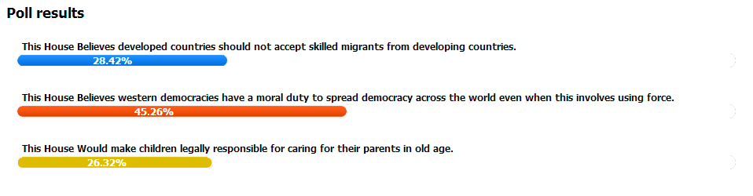

Closer2Oxford meets Diwanieh / 25 June
Eight selected Romanian debaters and two trainers traveled to Jordan between June 18th - 22nd for the debate exchange, the final phase of the Closer2Oxford meets Diwanieh project. We challenged participants to showcase their argumentation and public speaking skills in a mixed team tournament on the topics:
- This House Would ban advertising targeting children
- This House Believes developed countries should not accept skilled migrants from developing countries.
- This House Believes debate should be a compulsory subject in high school.
The best debaters in the tournament debated in a public event on the topic Governments shouldn't fund arts. Speaking for the motion were Anca Pelesteanu, Rawan Hourani and Hatem AL Hmoud and speaking against the topic were Paul Chichernea,Carmel Hilal and Ghassan Hijazi. Participating in the audience were the other debaters in the project and citizens of Amman.
Hats off to all debaters for their hard work, ambition and willingness to step out of their confort zone. The debates and all social activities of the exchange made June memorable.
The public debate from Weibdeh park is available here.
Images from the debate exchange are available here and here.
Online debate rankings / 16 April
40 students from Jordan and Romania accepted our debate challenge, after participating in an intensive six day training. After a week of research, consultations and strategizing among team mates, all debate rounds are done, with 2 speeches on each side of the motion - Affirmative and Negative.
We are excited to present the ranking below and we congratulate all teams who debated on the motion: This House Believes western democracies have a moral duty to spread democracy across the world even when this involves using force. If under Ballots it reads 1, it means the team has won the round; if 0, it means it lost. Click on the team name to read the entire debate, scroll down to see the adjudicator's feedback and verdict, together with the speaker points.
You can learn more about the adjudicators volunteering for this round on our Facebook page.
| Rank | Team name | Members | Points | Side | Ballots | Judge |
|---|---|---|---|---|---|---|
| 1 | Carmel and Yazan (see match 367) | Carmel Hilal Yazan Thabet Madridista |
51.00 | Negative team | 1 | Laura Bretea |
| 2 | Fingerprint (see match 368) | Hareth Nwihi Rawan Hourani |
49.00 | Affirmative team | 1 | Liviu Gajora |
| 3 | PoP: Power of People (see match 365) | Ahmed Akour Anood Amjad Abutayeh |
49.00 | Negative team | 1 | George Maxim |
| 4 | Seekers (see match 366) | Teo Oprea Claudia Pislaru |
49.00 | Affirmative team | 1 | Laura Ardeleanu |
| 5 | L.E.D (see match 369) | Andreea Dumitrescu Paul Chichernea |
48.00 | Negative team | 1 | George Jiglau |
| 6 | The Minions (see match 374) | Anca Pelesteanu Valentin Teodorov |
47.00 | Affirmative team | 1 | Ioana Georgescu |
| 7 | Borderless (see match 373) | Nadia Nofal Maria Antica |
47.00 | Negative team | 1 | Cristina Rosu |
| 8 | The Argument (see match 370) | Mădălin Blidaru Ruxandra Simion |
47.00 | Negative team | 1 | Bianca Prunea |
| 9 | The Champions (see match 372) | Dalia Quba Hatem Al Hmoud |
43.00 | Negative team | 1 | Calin Muresanu |
| 10 | Democratic Girl (see match 371) | Anamaria Dorofte Mihaela Costache |
24.00 | Negative team | 1 | Radu Ocrain |
| 11 | The Nile (see match 368) | Luca Avadani Olga Cojocariu |
48.00 | Negative team | 0 | Liviu Gajora |
| 12 | Challenge2Progress (see match 365) | Alina Ciobotaru Bogdan Muresan |
48.00 | Affirmative team | 0 | George Maxim |
| 13 | DBR -Death by Rebuttal (see match 366) | Ruqayya Zakaria Ghassan Hijazi |
45.00 | Negative team | 0 | Laura Ardeleanu |
| 14 | Mihai Paun with Laura Dorneanu (see match 367) | Mihai Păun Laura Dorneanu |
44.00 | Affirmative team | 0 | Laura Bretea |
| 15 | Fire Starters (see match 373) | Anas Oweiwi Katia Smadi |
42.00 | Affirmative team | 0 | Cristina Rosu |
| 16 | N.U.R.V. = Never underestimate radical vision (see match 372) | Adelin Dumitru Silvia Bitan |
42.00 | Affirmative team | 0 | Calin Muresanu |
| 17 | Wind of Change (see match 370) | Osamah Fayez Rada Naji |
42.00 | Affirmative team | 0 | Bianca Prunea |
| 18 | Double Trouble (DT) (see match 369) | Ehab Haddad Rana Srouji |
42.00 | Affirmative team | 0 | George Jiglau |
| 19 | MC - Magical Convincers (see match 374) | Ibrahim Ammar Por Osama |
39.00 | Negative team | 0 | Ioana Georgescu |
| 20 | Chaos (see match 371) | Ayyam Alasaad Ghassan Hilow |
19.00 | Affirmative team | 0 | Radu Ocrain |
Reading Suggestions / 25 March
We all have our favorite magazines, online publications, books or blogs. We thought it would be useful to share with you some materials that make good reading for the topic of this debate round - "This House Believes western democracies have a moral duty to spread democracy across the world even when this involves using force." We will keep extending this list until the debate starts.
Researching the motion is an essential step in understanding the topic and generates ideas that can be then turned into the arguments of a convincing debate case. Bear in mind: research makes all the difference between a real debate worth watching/reading and an amateur discussion.
We invite debaters to extend their knowledge on this topic by reading these articles and others they find relevant.
Egypt: Should We Cheer the People or Weep for Democracy?
Is Islam Compatible With Democracy?
A Point of View: Democracy and Islamic law
Can Islam and Democracy Coexist?
The Long Haul for Democracy in Iraq
'What We Owe Iraq': We Broke It, We Bought It
Rumsfeld’s War and Its Consequences Now
Tracking the "Arab Spring": Egypt’s Failed Transition
Promoting Democracy Is Not Imposing Democracy
The Problem With Ukraine’s Transition to Democracy
What Makes Democracies Endure?
Online poll / 20 March
We invited the online community in Jordan and Romania to vote the topic they thing deserves to be debated online, for a week.
We proposed three debate motions and, gathering more than 45% of the votes, the topic of the debate rounds among the 40 debaters is:
This House Believes western democracies have a moral duty to spread democracy across the world even when this involves using force.

Closer2Oxford meets Diwanieh trainings / 11 March
Closer to Oxford meets Diwanieh started off with a series of training sessions. Students with various academic background (political sciences, law, foreign languages, economic studies, sociology, international relations, Islamic studies, psychology, geopolitics, cultural studies) gathered on March 1st, 2nd, 8th and 9th to share and gain experience in debating. We discussed concepts like motion/topic interpretation, burden of proof, argumentation and counter argumentation, and their impact on the motion. We also started preparing for the next project phase - the online debate to be held later in March, by practicing the online debate format. See pictures from the training sessions on our Facebook page
Apply for Closer2Oxford meets Diwanieh / 5 February
Are you interested in debate and keen to get a taste of the Arab world? Participate in Closer2Oxford meets Diwanieh - a four month project in English, where you hone your argumentation skills by participating in local trainings in Bucharest and an online debate tournament on www.closer2oxford.ro. The best 8 Romanian participants will join a debate exchange in Jordan together with the Jordanian students. If you are one of the happy 8, you will also be part of Diwanieh: a public debate in the streets or a public landmark of Amman!
ELIGIBILITY
* you are a national or permanent resident living in Romania
* you are a university student (bachelor/master's/doctoral studies)
* you have an interest in debating and proven interest in current/foreign affairs
* you should not have extended experience in debating (over 1 year of regular training and/or participation at international competitions)
* you have a good command of English - reading, writing and speaking
* you are capable of working in culturally mixed teams
* you are able to travel to Jordan for 6 days in May 2014
HOW TO APPLY
[1] Fill out this application form
[2] Send your CV to office@closer2oxford.ro . Please write a short email introducing yourself, it would be best if you included your phone number.
The deadline is February 18th.
Please read the project phases and only submit your application if you think you have the time, energy and willingness to fully commit to all phases.
Please note that the Romanian participants who are chosen to travel to Jordan are expected to contribute 30% of their travel costs (120-150 Eur). The rest of the program costs, accommodation and meals are fully covered for all participants (Romanian and Jordan) chosen to participate in the last phase. The total cost of the experience is approx. 1000 Eur/person.
This project is a collaboration between Closer2Oxford (ARDOR) and Diwanieh (Leaders of Tomorrow).